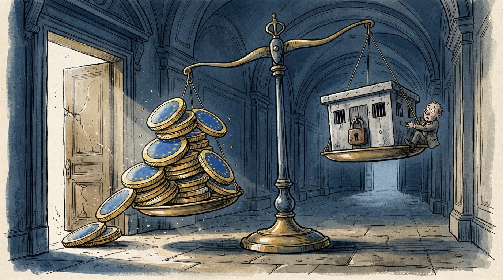
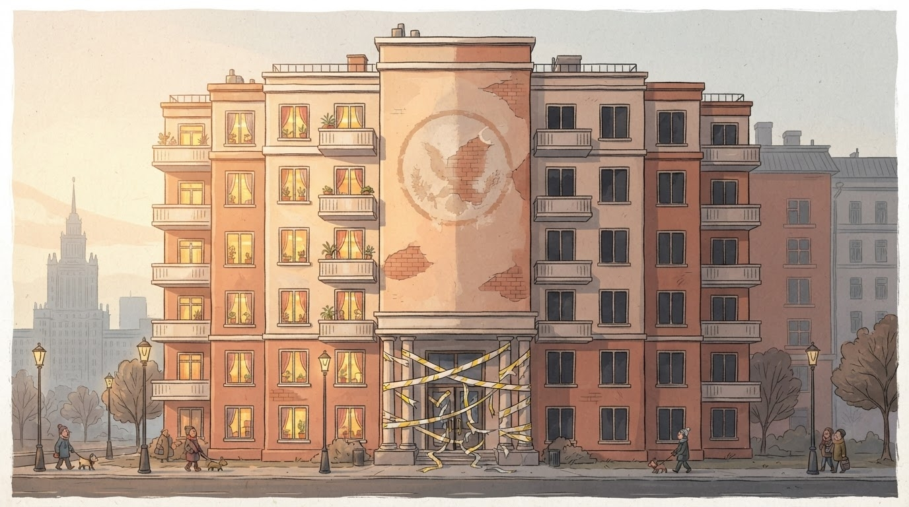

Ekonomi
Gazeta Satirike e Kosovës dhe Shqipërisë — lajme që nuk duhet t'i besoni, por i lexoni gjithsesi
Qeveria lançon gjashtë skema strehimi; njëra prej tyre përdor objektet e konfiskuara për shkelje ndërtimore — çka redaksia jonë e quan "ndreqje karmike, me metër katror".

Qeveria shqiptare zbuloi sot Programin Kombëtar të Strehimit — gjashtë skema të reja, nga të cilat njëra bazohet te "përshtatja" e objekteve të konfiskuara për shkelje të lejeve të ndërtimit. Redaksia jonë e përshëndet nismën si shembullin më elegant të "krimi paguan qiranë e vet".
"Kemi gjetur më në fund një përdorim pozitiv për ndërtimet e paligjshme", tha një zyrtar entuziast, duke shpjeguar se objektet që dikur ishin problem urbanistik tani do të bëhen zgjidhje sociale — pa specifikuar nëse muret janë ndërtuar me të njëjtën "përafërsi ligjore" me të cilën u konfiskuan.
"E kemi thënë gjithmonë: çdo ndërtim i paligjshëm mban brenda vetes një apartament social që pret të lirohet." — një arkitekt komunal, duke matur me sy një kat shtesë të pandërtuar zyrtarisht
Sipas llogaritjes së redaksisë, nëse një objekt konfiskohet për shkelje ligjore dhe pastaj kthehet në banesë sociale, atëherë numri i "shkeljeve të dobishme" rritet proporcionalisht me numrin e familjeve të strehuara — një formulë që korrektori ynë i matematikës e quan "e vetmja herë kur dy të gabuara bëjnë një të drejtë, të paktën në letër".
Ndërkohë, drafti i plotë i reformës është "në përgatitje" dhe pritet të kalojë në "konsultim publik" — fazë që, sipas historikut të ngjashëm, mund të zgjasë nga disa javë deri në disa legjislatura.
Deri atëherë, familjet e reja që kërkojnë strehim inkurajohen të mbajnë shpresa dhe, sipas rekomandimit tonë redaksional, të mësojnë të dallojnë nga larg një objekt "në proces konfiskimi" — mund të jetë shtëpia e ardhshme.